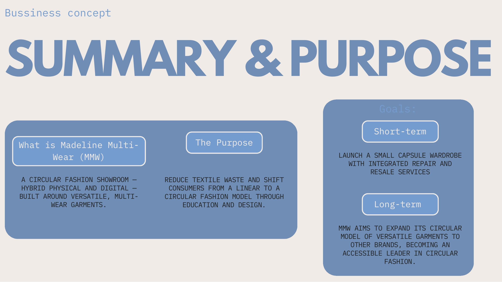
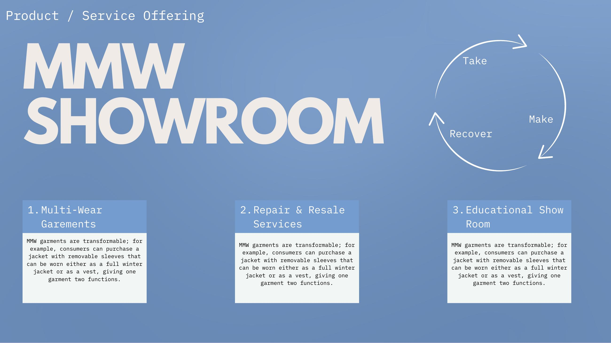
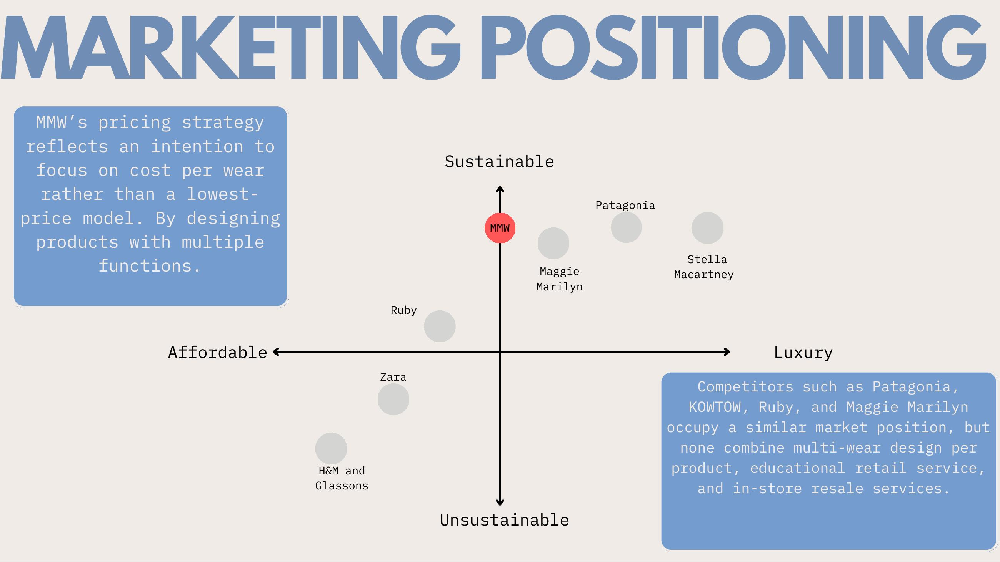
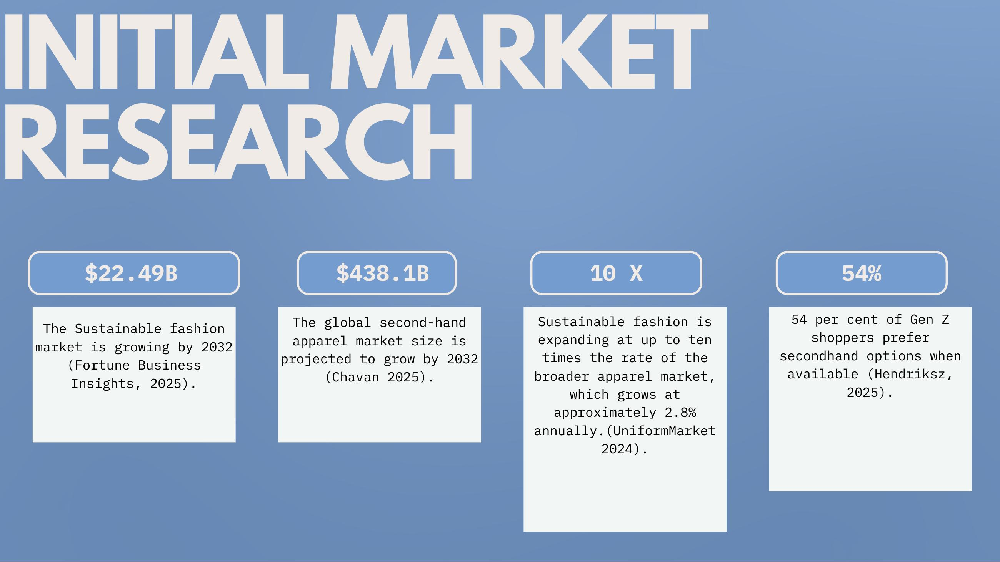

Brief
Build a viable fashion venture that responds to the industry's overproduction problem without falling into greenwashing.
Fast fashion runs on a take-make-dispose loop, short product lifespans, mounting textile waste, and a Gen Z audience increasingly priced out of genuinely sustainable alternatives. Brands like Stella McCartney and Patagonia hold the ethical high ground but at a price point most early-career consumers can't justify. The brief: position something between fast fashion and luxury that earns its sustainability claim through design, not marketing.
"The most circular, ethical and sustainable thing is for brands to encourage their customers to get off the fashion trend-mill and replace trends with long-term, timeless, personal styles." , Ragtrader Sustainability Report, 2025
Approach
MMW responds with three locked-together moves. First, multi-wear garment design, each piece transforms (a jacket whose sleeves zip off into a vest, a skirt that adjusts mini to maxi, a dress that becomes a top). One purchase, multiple silhouettes, real cost-per-wear value. Second, an in-store repair-and-resale credit system that brings garments back into circulation rather than landfill. Third, a hybrid physical/digital showroom that doubles as an education space, garment care, styling, and the industry's environmental story made tangible.
The positioning sits in the underserved gap between Zara and Stella McCartney, what I've called accessible conscious multi-wear. Competitors like Patagonia, KOWTOW, Ruby and Maggie Marilyn are nearby, but none combine multi-wear design per product with educational retail and in-store resale.




Outcome
A full venture proposal with positioning, CSR strategy, target market, brand identity direction, and a phased roadmap.
The deliverable: business concept, market opportunity sizing (the global sustainable fashion market is projected to hit US$22.49B by 2032, growing 10× faster than apparel overall), competitive matrix, target consumer profile (Gen Z, 18–25, affordable-luxury bracket), and a short-term/long-term goal split, capsule launch with repair and resale first, then expanding the multi-wear model out to partner brands as an accessible leader in circular fashion.